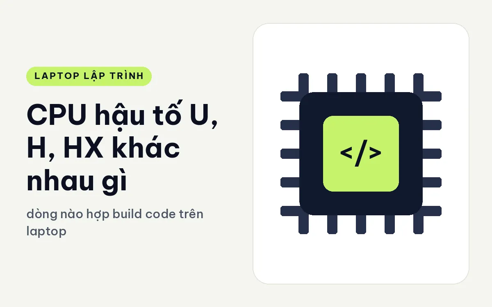
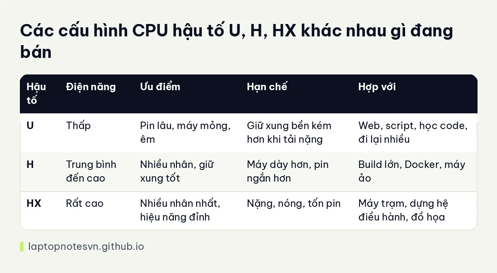

CPU hậu tố U, H, HX khác nhau gì - dòng nào hợp build code trên laptop

Nhìn vào tên chip laptop, bạn thường gặp những đuôi chữ như U, H, HX. Chúng không phải để trang trí. Mỗi chữ cho biết chip được thiết kế để chạy ở mức điện năng nào, và vì thế quyết định máy mát hay nóng, pin lâu hay mau cạn, build code nhanh hay chậm. Hiểu ba chữ này giúp bạn khỏi chọn nhầm chip so với công việc.
Bài này giải thích theo cách người viết code dùng máy: từng dòng hợp với việc gì, build lâu có cần dòng mạnh hay không, rồi áp vào các máy đang bán. Tôi chỉ nói theo nguyên lý chung, không đưa điểm số benchmark, vì kết quả thực tế còn phụ thuộc cách hãng tản nhiệt và giới hạn công suất.
U, H và HX khác nhau ở đâu
Chữ U chỉ dòng tiết kiệm điện. Chip loại này chạy ở mức điện năng thấp, tỏa nhiệt ít, nên máy mỏng, nhẹ, pin lâu, quạt êm. Đổi lại, khi bạn đẩy tải nặng kéo dài, chip phải hạ xung để giữ nhiệt trong giới hạn, nên hiệu năng bền thấp hơn các dòng còn lại.
Chữ H chỉ dòng hiệu năng cao cho laptop. Chip được phép dùng nhiều điện hơn nên giữ xung cao lâu hơn, thường có thêm nhân, và máy cần quạt và ống đồng lớn hơn. Dòng này hợp với người build nhiều, chạy máy ảo hoặc Docker thường xuyên.
Chữ HX là mức cao nhất, thực chất là chip hiệu năng cấp máy tính để bàn đưa vào laptop. Nhiều nhân nhất, tiêu thụ điện lớn nhất, cần tản nhiệt kích cỡ lớn, và vì vậy máy dùng chip HX thường là máy trạm nặng ký. Chúng chạy mạnh khi cắm điện, còn dùng pin thì pin tụt nhanh.
Một điều đáng nhớ: số nhân cao không luôn có nghĩa nhanh hơn trong mọi việc. Gõ code, duyệt web, chạy IDE đa số là tác vụ nhẹ và dùng ít nhân. Chỉ khi biên dịch song song, nén, chạy test nhiều luồng hay chạy máy ảo thì nhiều nhân mới phát huy.
Build code cần dòng nào
Web frontend và backend nhỏ thường chỉ cần dòng U. Biên dịch TypeScript, chạy test vài chục giây, khởi động server cục bộ đều ổn trên chip tiết kiệm điện. Bạn được lợi về pin và độ ồn.
Nếu bạn biên dịch C++ hay Rust cỡ lớn, build Android, build Java nhiều module hoặc chạy Docker nhiều container, dòng H đáng giá. Thời gian chờ mỗi lần build có thể rút ngắn đáng kể, nhất là khi máy được cắm điện và hạ nhiệt tốt.
Dòng HX dành cho nhu cầu rất nặng: dựng hệ điều hành, biên dịch dự án khổng lồ, xử lý dữ liệu lớn, hoặc làm đồ họa kèm lập trình. Với người chỉ code thông thường, HX là dư thừa và làm máy nặng, nóng, tốn pin.
Để hiểu thêm cách RAM đi cùng chip trong từng kiểu việc, bạn có thể đọc lập trình viên cần bao nhiêu RAM.
Các điểm chính dạng bảng

| Hậu tố | Điện năng | Ưu điểm | Hạn chế | Hợp với |
|---|---|---|---|---|
| U | Thấp | Pin lâu, máy mỏng, êm | Giữ xung bền kém hơn khi tải nặng | Web, script, học code, đi lại nhiều |
| H | Trung bình đến cao | Nhiều nhân, giữ xung tốt | Máy dày hơn, pin ngắn hơn | Build lớn, Docker, máy ảo |
| HX | Rất cao | Nhiều nhân nhất, hiệu năng đỉnh | Nặng, nóng, tốn pin | Máy trạm, dựng hệ điều hành, đồ họa |
Những điều dễ bỏ qua khi nhìn tên chip
Cùng một hậu tố nhưng hai máy có thể chạy rất khác nhau. Hãng đặt giới hạn công suất và thiết kế quạt, ống đồng riêng cho từng khung máy, nên chip H trong một thân máy mỏng có thể giữ xung kém hơn chip H trong thân máy dày. Vì vậy hãy xem cả độ dày, số quạt và kiểu tản nhiệt chứ đừng chỉ đọc tên chip.
Thế hệ chip cũng quan trọng. Một chip đời mới dòng U có thể ngang hoặc hơn chip H đời cũ ở tác vụ nhẹ, vì kiến trúc mới tiết kiệm điện hơn. Mặt khác, khi tải đa luồng kéo dài, chip có nhiều nhân và công suất cao hơn vẫn có lợi thế rõ.
Cuối cùng, hãy tự hỏi mình build mỗi ngày bao nhiêu lần và mỗi lần mất bao lâu. Nếu mỗi lần chờ chỉ vài chục giây, chênh lệch giữa U và H gần như không đáng kể. Nếu mỗi lần chờ vài phút và lặp đi lặp lại cả ngày, dòng mạnh hơn sẽ trả lại công sức rất nhanh.
Soi thử vài mẫu máy thật
Ví dụ dòng U: DELL Pro 14 PC14250 (2025) dùng Core Ultra 5 225U, RAM 16GB DDR5 5200, SSD 256GB, nặng 1,35 kg, màn FHD+ tỉ lệ 16:10. Đây là kiểu máy nhẹ và êm, hợp web, backend nhỏ, học code. Nếu build nặng, bạn sẽ cảm nhận được giới hạn của dòng U.
Ví dụ dòng H: DELL Pro Max 14 MC14250 - Mobile Workstation (2025) có bản Ultra 7 265H kèm RAM 32GB và card RTX PRO 500 6GB, nặng 1,83 kg. Máy lớn hơn dòng U, nhưng giữ xung tốt hơn khi build dài. Bản Ultra 7 255H với 16GB RAM là phương án nhẹ hơn cùng họ chip H.
Ví dụ dòng HX: Lenovo ThinkPad P16 Gen 3 - Mobile WorkStation (2025) có bản Ultra 7 255HX 32GB và bản Ultra 9 285HX 64GB, nặng 2,54 kg. Đây là máy trạm điển hình: mạnh, nhiều RAM, tản nhiệt lớn. Nó hợp người dựng hệ thống nặng chứ không hợp người chỉ viết code web.
Cuối cùng, khi cần chọn giữa các thế hệ chip của Intel và AMD, bài Intel Core Ultra và Ryzen cho dev đặt hai hãng lên bàn cân theo nhu cầu lập trình.
Đăng ngày 09/11/2026